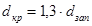
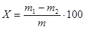

МИНИСТЕРСТВО
МОНТАЖНЫХ И СПЕЦИАЛЬНЫХ
СТРОИТЕЛЬНЫХ РАБОТ СССР
|
СОГЛАСОВАНО Первый заместитель Председателя Госгортехнадзора СССР М.П. ВАСИЛЬЧУК (письмо № 02-20/379 от 17.09.84 г.) |
УТВЕРЖДАЮ Заместитель министра монтажных и специальных строительных работ СССР Г.В. МИЛОВИДОВ 24 декабря 1984 г. |
ИНСТРУКЦИЯ
ПО ПРИМЕНЕНИЮ ПОРОХОВ
НА ВЗРЫВНЫХ РАБОТАХ
ВСН 341-84
Минмонтажспецстрой СССР
Центральное бюро
научно-технической информации
Москва 1985
В инструкции изложены способы безопасного обращения с порохами, правила их хранения и транспортировки к месту производства работ. Приведены общие сведения о порохах.
Указаны особенности обращения с порохами при различных методах производства взрывных работ, а также порядок выполнения работ при ликвидации отказавших пороховых зарядов.
Инструкция подготовлена Центральной производственно - экспериментальной специализированной строительной лабораторией (ЦПЭС) треста Союзвзрывпром.
|
Министерство монтажных и специальных строительных работ СССР (Минмонтажспецстрой СССР) |
Ведомственные строительные нормы |
ВСН 341-84 Минмонтажспецстрой СССР Взамен ВСН 341-75 ММСС СССР |
|
Инструкция по применению порохов на взрывных работах |
1.1. Настоящая инструкция является обязательной для всех специализированных организаций по производству взрывных работ Минмонтажспецстроя СССР, применяющих коллоидные и дымные пороха.
1.2. Положения инструкции должны соблюдать инженерно-технические работники, осуществляющие проектирование и руководство взрывными работами, заведующие складами, а также взрывники, производящие взрывные работы порохами.
1.3. При применении коллоидных и дымовых порохов для ведения взрывных работ необходимо соблюдать требования «Единых правил безопасности при взрывных работах», утвержденных Госгортехнадзором СССР, «Технических правил ведения взрывных работ на дневной поверхности», утвержденных Минмонтажспецстроем СССР и согласованных с Госгортехнадзором СССР, «Временной инструкции по подводным взрывным работам», «Типовой инструкции по технике безопасности для взрывников на открытых горных работах», утвержденной Главспецпромстроем 13.11.78 г. и согласованной с Госгортехнадзором СССР 5.12.78 г.
1.4. Для производства взрывных работ допускаются коллоидные и дымные пороха, на которые имеются ГОСТы или утвержденные в установленном порядке ТУ, а также журнальные постановления Госгортехнадзора СССР.
1.5. Коллоидные пороха по химической стойкости, срокам очередных испытаний, а также условиям хранения и обращения подразделяются на три группы:
I группа - пороха химически стойкие и безопасные в обращении. Их проверяют на химическую стойкость в очередные сроки испытаний, указанные в паспорте, но не реже одного раза в год;
II группа - пороха с пониженной химической стойкостью, но безопасные в обращении. Длительному хранению не подлежат. Их испытания на химическую стойкость проводят не реже одного раза в 6 месяцев, но если есть сомнения в их доброкачественности, определяемой по внешним признакам (изменение цвета, появление запаха окислов азота и т.п.), то испытания порохов производят раз в месяц;
III группа - пороха химически нестойкие и опасные в обращении.
|
ВНЕСЕНА трестом Союзвзрывпром |
УТВЕРЖДЕНА
Мннмонтажспецстроем СССР |
Срок введения «1» января 1985 г. |
1.6. Применение порохов III группы на взрывных работах категорически запрещается.
1.7. К производству взрывных работ с применением коллоидных и дымных порохов I и II групп и их испытаниям допускаются лица, имеющие «Единую книжку взрывника», изучившие нормативно-техническую документацию на применяемые пороха и настоящую инструкцию, а также сдавшие экзамены квалификационной комиссии.
1.8. Лица, занятые на погрузочно-разгрузочных работах, а также на работах по растариванию коллоидных и дымных порохов и заряжанию камер, должны быть проинструктированы под роспись руководителем взрывных работ о свойствах и особенностях применяемых порохов и мерах предосторожности при обращении с ними (ящики или мешки с порохом не бросать, при вскрытии ящиков пользоваться инструментом, не дающим искры, исключать случаи просыпания пороха, при переупаковке дымных порохов пользоваться противопыльными респираторами).
1.9. Применение коллоидных и дымных порохов для взрывных работ должно осуществляться по технической документации, предусмотренной требованиями «Единых правил безопасности при взрывных работах» и «Технических правил ведения взрывных работ на дневной поверхности».
1.10. Пороха более чувствительны к внешним воздействиям, чем другие промышленные ВВ, поэтому при работе с порохами требуется соблюдать особую осторожность и использовать пороха только при таких работах, где нет возможности их замены другими промышленными ВВ.
2.1. Коллоидные пороха классифицируются по летучим свойствам растворителя нитратов целлюлозы, применяемого при их изготовлении:
на летучем растворителе - пироксилиновые;
на труднолетучем - баллиститные;
на смешанном растворителе - кордитные.
2.2. Коллоидные пороха представляют собой плотные роговидные вещества, имеющие высокую механическую прочность. Цвет пороха, в зависимости от его состава, изменяется от светло-желтого до черного. В процессе хранения цвет пороха может изменяться.
2.3. По форме пороховых элементов различают пороха цилиндрические, прямоугольные, пластинчатые, ленточные, трубчатые, в виде колец, нитей, спиралей и т.п. Коллоидные пороха в виде цилиндриков (без каналов или с каналами), прямоугольников, пластинок, обладающие сыпучестью, называются зернистыми. Это, как правило, пироксилиновые пороха. Сыпучесть зернистых порохов зависит от их размеров и качества обработки поверхности.
2.4. Плотность пороховых элементов в зависимости от состава пороха составляет, г/см3:
пироксилиновых.......................... 1,5-1,6;
баллиститных............................... 1,54-1,65;
кордитных..................................... 1,52-1,62.
2.5. Коллоидные пороха, особенно россыпные, очень чувствительны к тепловому импульсу и искровому разряду. При пересыпании они могут электризоваться до высоких потенциалов, что может привести и искровому разряду и вызвать воспламенение пороховой пыли или паров летучего растворителя.
2.6. Коллоидные пороха легко воспламеняются от огнепроводного шнура.
2.7. Горение порохов в прочной оболочке или при большой массе может перейти в детонацию.
2.8. По чувствительности к удару коллоидные пороха аналогичны детонитам.
2.9. При длительном хранении коллоидных порохов возможно изменение их состава во всей массе или перераспределение некоторых компонентов по слоям пороховых элементов. Способность пороха противостоять в процессе хранения подобным изменениям называется физической стабильностью. Физическая стабильность порохов на труднолетучем растворителе выше, чем пироксилиновых. У пироксилиновых порохов нарушение физической стабильности связано с уменьшением летучих веществ и изменением содержания флегматизатора. У баллиститных порохов это нарушение связано с процессами эксудации и «выцветания».
2.9.1. Эксудацией или «выцветанием» называется процесс выделения из пороха труднолетучего растворителя в жидком состоянии на поверхность пороховых элементов. Эксудация происходит в основном при низких температурах.
2.9.2. «Выцветанием» называется процесс выкристаллизования на поверхности пороховых элементов твердых компонентов пороха.
2.10. Химической стойкостью порохов называется их способность сопротивляться медленному разложению при хранении. Время, в течение которого пороха сохраняют свои свойства при полной безопасности в обращении, называется сроком служебной пригодности.
2.10.1. Признаками разложения коллоидных порохов являются изменение света, появление на поверхности пороховых элементов расползавшихся желтоватых пятен («язв»), вздутий и трещин, выделение бурых окислов азота. Такие пороха должны быть немедленно уничтожены (см. п. 7 настоящей инструкции).
2.11. Взрывчатые характеристики коллоидных порохов
2.11.1. Фугасность коллоидных порохов в основном зависит от состава пороха. Определяется фугасность по пробе Трауцля (как и промышленных ВВ). Фугасность коллоидных порохов составляет 300 - 360 см3 (тротил 285 - 310 и аммонит № 6ЖВ - 360 - 380 см3).
2.11.2. Бризантность коллоидных порохов, так же как и промышленных ВВ, определяется по пробе Гесса и для коллоидных порохов составляет 9-16 мм (тротил - 16 и аммонит № 6ЖВ - 14 мм).
2.11.3. У сухих пироксилиновых и баллиститных порохов скорость детонации составляет соответственно 5000-5500 и 5500-6000 м/с. В водонаполненном состоянии скорость детонации пироксилиновых и баллиститных порохов практически одинакова и составляет 5500-6500 м/с.
2.11.4. Теплота взрывчатого превращения зависит от состава пороха.
2.11.5. Восприимчивость коллоидных порохов к детонации зависит от их состава, формы и размеров. Пироксилиновые пороха мелких фракций (винтовочные) надежно детонируют от капсюля-детонатора № 8. Для возбуждения детонации остальных видов порохов требуется промежуточный детонатор.
2.11.6. Полная идеальная работа взрыва коллоидных порохов, особенно в водонаполненном состоянии, находится на уровне гранулотола.
3.1. В зависимости от назначения и фракционного состава дымные пороха имеют следующие марки:
КЗДП-1, КЗДП-2 и КЗДП-0 - крупнозернистые № 1, 2 и особый;
ДРП-1, ДРП-2, ДРП-3 - ружейные № 1, 2 и 3;
ДРП-2Пр, ДРП-3Пр, ДРП-4Пр - ружейные № 2, 3, 4 для прессованных изделий;
ДРП-2ПГ, ДРП-3ПГ - ружейные № 2 и 3;
ДШП - шнуровой порох;
ДОП-от и ДОП-об - охотничий отборный и обыкновенный;
ДМП-1 и ДМП-2 - минные пороха;
ДВП - порох для взрывных работ на дневной поверхности;
ПМ - пороховая мякоть.
3.2. Дымные пороха представляют собой зернистую или порошкообразную механическую смесь, состоящую из калиевой селитры, древесного угля и серы в различных соотношениях.
3.3. По внешнему виду зернистые пороха представляют собой полированные зерна серовато-черного цвета, не имеющие на поверхности налета выкристаллизовавшейся селитры и желтоватых крапин серы. Минный порох - зерна с металлическим отливом, покрытые графитом. Пороховая мякоть - порошок серовато-черного цвета. В порохах не должно быть посторонних примесей.
3.4. По физическим свойствам (показателям) дымный порох марки ДВП должен соответствовать следующим требованиям и нормам.
Гигроскопичность (% не более)................... 1,5
Плотность, г/см3
гравиметрическая....................................... 0,87-1,1
действительная (не более)......................... 1,77
Массовая доля пороховой пыли, %................ 0,1
3.5. Взрывчатые характеристики дымных порохов
3.5.1. Чувствительность к удару дымных порохов намного ниже, чем промышленных ВВ. При испытании их по стандартной методике (удар груза массой 10 кг с высоты 25 см) число взрывов составляет 1-2 %.
3.5.2. Чувствительность к трению дымных порохов зависит от количества пороховой пыли. Как правило, трение таких комбинаций металлов, покрытых пороховой пылью, как железо-железо, латунь-железо и т.п. приводит к воспламенению пороха. Поэтому при обращении с порохами необходимо следить за тем, чтобы пороховая пыль не оседала на трущихся деталях.
3.5.3. Дымные пороха очень чувствительны к тепловому импульсу в виде луча огня, искры и электрическому разряду. При этом чувствительность их резко возрастает в случае наличия пороховой пыли. Температура вспышки дымного пороха, определенная по стандартной методике, составляет 290 - 310 °С.
Искра от удара стали о камень приводит к воспламенению пороха.
Дымные пороха легко воспламеняются от огнепроводного шнура (ОШ).
3.5.4. Дымные пороха надежно детонируют при диаметре шнуров 40 мм и более.
4.1. Пороха являются токсичными, взрывопожароопасными веществами. Их токсичность обусловлена токсичностью входящих в состав порохов компонентов.
4.2. При переупаковке сыпучих пироксилиновых и дымных порохов, а также при заряжании шпуров дымными порогами необходимо применять противопыльные респираторы типа «Лепесток» и соблюдать меры личной гигиены.
4.3. При любых операциях с порохами должна соблюдаться максимальная осторожность: ящики с порохом не должны подвергаться ударам и толчкам, запрещается бросать, волочить, перекатывать (кантовать) и ударять ящики с порохами.
4.4. При всех работах с порохами запрещается курить, а также иметь при себе огнестрельное оружие, спички и другие зажигательные принадлежности. Спички разрешается иметь только взрывникам и лаборантам, которые в процессе работы или при испытаниях производят зажигание огнепроводного шнура.
4.5. Запрещается применять открытый огонь ближе 100 м от места работ с порохами.
4.6. Вскрытие отдельного ящика с порохом (для отбора проб при их испытании или выдаче по наряду-путевке взрывнику для производства взрывных работ в количествах меньше целого числа ящиков) необходимо производить в тамбуре хранилища или не ближе 20 м от хранилища.
4.7. Вскрывать ящик с порохом разрешается только при помощи инструментов, изготовленных из материалов, не дающих искры.
4.8. Переупаковка порохов, а также изготовление зарядов из трубчатых порохов должны производиться на территории склада ВМ или на местах производства работ.
4.9. Переупаковку порохов и изготовление зарядов следует производить на брезенте на расстоянии не менее 20 м от места их хранения и только в светлое время суток; при этом необходимо соблюдать меры, предупреждающие просыпание пороха.
4.10. Переупаковку порохов следует производить в стандартные бумажные или матерчатые мешки массой не более 40 кг.
4.11. Разрешается при изготовлении зарядов для производства взрывных работ под водой переупаковку коллоидных порохов производить в самодельные матерчатые рукава заданного диаметра. Масса такого заряда определяется грузоподъемностью средств, имеющихся на месте производства работ.
4.12. После переупаковки вся тара из-под порохов должна быть возвращена на склад. Её необходимо тщательно осмотреть и полностью освободить от остатков пороха, а металлическую тару - тщательно промыть водой.
4.13. Остатки пороха необходимо собрать в специальный ящик и в последующем уничтожить в соответствии с пп. 7.2 и 7.3 настоящей инструкции.
4.14. Изготовление зарядов из трубчатых коллоидных порохов производят в такой последовательности: трубки пороха собирают в пучок заданного диаметра и перетягивают по краям пучка изоляционной лентой. Диаметр скважинных зарядов должен равняться 0,8-0,85 диаметра скважин.
4.15. Контроль за переупаковкой порохов и изготовлением зарядов возлагается на руководителя взрывных работ.
4.16. При заряжании шпуров (скважин) дымными и сыпучими пироксилиновыми порохами необходимо применять совки, мерные кружки и зарядные воронки, изготовленные из материала, не дающего искры.
4.17. При заряжании сыпучими коллоидными порохами сухих и котловых скважин, а также камер для устранения электризации пороха необходимо смачивать водой.
4.18. Взрывание пороховых зарядов осуществляют электрическим способом или с помощью детонирующего шнура.
Приобретение, прием, отпуск, учет и хранение порохов должны осуществляться в соответствии с положениями «Инструкции о порядке хранения, использования и учета взрывчатых материалов», утвержденной Госгортехнадзором СССР и МВД СССР, и следующих требований:
5.1. Каждая партия и марка коллоидного пороха должны иметь паспорт поставщика с указанием времени и результатов проведенных им испытаний на химическую стойкость.
5.2. Хранить на складах ВМ коллоидные пороха I и II групп по химической стойкости разрешается в течение не более одного года.
5.3. Хранить коллоидные и дымные пороха разрешается только в заводской упаковке (металлические короба, вложенные в деревянные ящики). Дымные пороха марок ДШП и ПМ хранятся в мешках, вложенных в деревянные ящики, а расфасованные пороха марок ДОП-от и ДОП-об хранятся в коробах из картона, вложенных в деревянные ящики. Гарантийный срок хранения данных порохов в герметичной таре - 20 лет, в негерметичной - 2 года с момента изготовления.
5.4. Коллоидные пороха с различными сроками хранения следует хранить раздельно друг от друга на разных стеллажах или в разных штабелях, при этом следует укладывать их в штабели высотой не более 1,5 м.
5.5. Ящики с дымным порохом целесообразно размещать только на стеллажах, при этом пороха различных марок должны размещаться на разных полках.
5.6. Помещения для хранения дымного пороха следует тщательно убирать, чтобы на полу, стенах и полках хранилища не было скоплений пороховой пыли.
5.7. Входить и работать в помещениях для хранения коллоидных и дымных порохов разрешается в обуви, не имеющей железных гвоздей и подковок.
5.8. При проведении разовых взрывных работ допускается хранение порохов производить на специальных площадках, при этом ящики с порохами должны находиться на деревянном настиле высотой не менее 20 см от земли и под навесом или брезентовым покрытием.
В летнее время года брезент должен быть побелен меловым раствором.
Допустимый срок хранения составляет 60 суток.
5.9. В зависимости от количества порохов, хранящихся на спецплощадке, должны быть соблюдены предельные расстояния от различных сооружений и полотна железной дороги, предусмотренные в «Единых правилах безопасности при взрывных работах». Спецплощадки следует располагать на расстоянии не менее 300 м от места производства взрывных работ.
5.10. На территории спецплощадки и в радиусе 100 м от нее не допускается складирование дров, соломы, сена, сухих листьев или других горючих материалов.
5.11. При хранении пороха на спецплощадках средства инициирования должны находиться в отдельных палатках или землянках на расстоянии не ближе 25 м от штабеля с порохами.
5.12. При производстве разовых взрывных работ под водой разрешается хранить коллоидные пороха в судовых хранилищах ВМ, устройство которых должно быть согласовано соответственно с Регистром СССР или речным Регистром союзной республики.
6.1. Пороха необходимо подвергать испытаниям для определения их пригодности для хранения и применения при взрывных работах как при поступлении на склад ВМ (входной контроль), так и в процессе хранения.
Сроки проведения входного контроля порохов устанавливаются «Инструкциями о порядке приемки продукции производственно-технического назначения и товаров народного потребления по качеству и количеству», утвержденной Госарбитражем при Совете Министров СССР.
6.2. Результаты осмотра и испытаний порохов должны оформляться актом по форме № 1 и заноситься в специальный журнал по форме № 2 (приложение 2 к «Единым правилам безопасности при взрывных работах»).
6.3. Поступившие на склад ВМ коллоидные пороха должны иметь сопроводительные документы, в которых должны быть указаны гарантийный срок хранения и результаты испытаний на химическую стойкость. Испытание коллоидных порохов на химическую стойкость производится в лаборатории поставщика.
6.4. Испытание коллоидных порохов при входном контроле.
6.4.1. Внешний осмотр тары и состояние маркировки.
Осмотру должны подлежать все ящики с порохами, поступившие на склад. Проверяется их количество и целостность.
Ящики должны быть опломбированы и иметь четкую маркировку. Количество ящиков, масса порохов и их маркировка должны соответствовать сопроводительным документам. При несоответствии количества ящиков с порохами (а также обнаружении ящиков с дефектами), массы порохов и их марки сопроводительным документам вызывается представитель поставщика и составляется акт, который направляется поставщику для принятия мер.
6.4.2. Проверка наличия эксудации.
Данному виду испытаний следует подвергать только нитроглицериновые пороха. От поступившей партии вскрывают не менее трех ящиков с порохом, из которых отбирают по одной пачке трубчатых порохов. При разворачивании бумажной оболочки на ее внутренней поверхности и на поверхности трубок пороха не должно быть следов жидкости. Наличие капель жидкости или расплывшихся больших пятен указывает на наличие эксудации. При достаточном количестве жидкости каплю переносят стеклянной палочкой в пробирку с водой. Если капля жидкости не смешивается с водой и тонет, то это - нитроглицерин. В этом случае вызывается представитель поставщика, составляется акт, а вся партия порохов подлежит уничтожению взрыванием в соответствии с пп. 7.5 и 7.6 настоящей инструкции.
6.5. Испытания коллоидных порохов при хранении.
6.5.1. Наружный осмотр пороховых элементов.
Наружный осмотр пороховых элементов производится не реже одного раза в квартал с целью определения признаков разложения пороха.
На поверхности пороховых элементов не должно быть расползающихся желтоватых пятен (язв), вздутий, трещин и наличия эксудата.
6.5.2. Разрешается определять признаки разложения пороха по синей лакмусовой бумажке. Для этого вскрывается герметичная крышка металлического ящика и на поверхность пороха кладется синяя лакмусовая бумажка. Если синяя лакмусовая бумажка быстро краснеет, то это является несомненным признаком процесса разложения пороха.
6.5.3. Коллоидные пороха с признаками разложения подлежат уничтожению.
6.6. Определение взрывчатых свойств коллоидных порохов.
6.6.1. Определение критического диаметра.
Критический диаметр сыпучих пироксилиновых порохов определяется с помощью зарядов конической формы в бумажной оболочке. Диаметр основания конуса должен быть заведомо больше ожидаемого. Для пироксилиновых порохов диаметр основания конуса принимается равным не менее 100 мм. Длина конусного заряда должна быть не менее 500 мм. При данном виде испытаний устанавливается также минимальная масса промежуточного детонатора, обеспечивающая полную детонацию заряда. Порядок испытаний следующий: в заряд пороха полностью заглубляется патрон аммонита № 6ЖВ с введенным в него ЭД. Затем заряд пороха размещают на металлической плите или деревянной рейке и производят его подрыв.
Диаметр, при
котором происходит затухание детонации конусного заряда, устанавливается по
отметке на металлической плите или деревянной рейке, при этом dкр определяется по
формуле: 
Критический диаметр трубчатых порохов определяется в цилиндрических зарядах (пучках), диаметр которых также берется заведомо больше, чем ожидаемый. Для большинства марок баллиститных порохов первоначальный диаметр открытого заряда принимается равным не менее 200 мм. Промежуточный детонатор (патрон аммонита № 6ЖВ для пироксилиновых порохов и два патрона аммонита № 6ЖВ или шашка Т-400 для баллиститных порохов) вводится в центральную часть заряда или плотно закрепляется на его боковой поверхности. При получении положительных результатов (по полноте детонации) диаметр заряда уменьшается. Полнота детонации определяется по отсутствию остатков пороха на месте взрыва. Диаметр заряда, при котором детонации заряда не происходит, принимается за dкр.
6.6.2. Полноту детонации сыпучих пироксилиновых порохов определяют в стальных трубах по ГОСТ 21987-76 «Вещества взрывчатые промышленные. Определение полноты детонации в стальной трубе».
6.6.3. Определение работоспособности коллоидных порохов.
Работоспособность коллоидных порохов определяют по воронкообразованию путем подрыва скважинных зарядов пороха на выброс. Испытания проводят в скважинах диаметром 105-150 мм. Масса порохового заряда (Q) принимается равной 8-12 кг. Глубина скважины определяется из формулы Берескова:
.
Для опытных взрывов выбирают участки грунта, где проходка выработок наименее трудоемка (супесь, суглинок и т.п.). Радиус опасной зоны для людей по разлету отдельных кусков взорванной породы определяют в соответствии с «Инструкцией по определению безопасных расстояний при взрывных работах и хранении взрывчатых материалов» и «Единых правил безопасности при взрывных работах».
При испытаниях сыпучих пироксилиновых порохов в скважину засыпают 2/3 массы общего заряда, вводят промежуточный детонатор, масса которого определена по п. 6.6.1 настоящей инструкции, затем засыпают часть заряда. Сверху заряда размещают забойку.
При испытании трубчатых порохов изготовляют цилиндрический заряд (собирают трубки в пучок и перетягивают его шпагатом или изоляционной лентой) диаметром меньшим диаметра скважины, так чтобы зазор между зарядом и стенкой скважины был не более 5 мм. Сверху заряда размещают промежуточный детонатор (шашку Т-400). Плотное прилегание шашки к торцевой поверхности заряда осуществляют с помощью изоляционной ленты. Заряд на шпагате опускают в скважину и сверху производят забойку. Взрывание зарядов производится с помощью детонирующего шнура.
Для сравнения в тех же условиях взрывают заряд эталонного ВВ (аммонит № 6ЖВ) той же массы.
Отсутствие выгоревшего пороха и его остатков после взрыва указывает на полную детонацию, а сравнение форм и объемов воронок, полученных после взрыва пороха и аммонита № 6ЖВ, служит критерием оценки взрывных свойств пороха. Выдержавшим испытание считается порох, который при двух испытаниях безотказно детонирует. Порох, не обеспечивающий полной детонации при максимальной массе промежуточного детонатора (до 15 % от массы заряда), считается неспособным к детонации и для взрывных работ не применяется. Об этом составляется акт в присутствии представителя поставщика. Вопрос об использовании такого пороха решается комиссией.
6.7. Испытание дымных порохов.
6.7.1. Входной контроль.
6.7.1.1. Внешний вид упаковки и состояние маркировки.
Осмотру подлежат все ящики каждой поступившей партии. Проверяют их целостность и количество, ящики должны быть опломбированы и иметь маркировку.
В маркировке должно быть указано:
товарный знак или условное обозначение предприятия-изготовителя;
условное обозначение пороха;
номер партии и номер места;
дата изготовления и дата упаковки;
масса (нетто), кг.
Ящики с дефектами отсортировываются в отдельную партию. Поврежденные ящики вскрывают и подвергают наружному осмотру металлическую специальную тару. Тара должна быть герметичной, опломбированной и иметь четкую маркировку, содержание которой соответствует маркировке на ящиках. Поврежденную металлическую тару отсортировывают в отдельную партию.
Из поврежденного (негерметичного) металлического короба алюминиевым совком сверху отбирают около 100 г пороха, который высыпают на белый лист бумаги и производят осмотр. Зерна пороха должны иметь серовато-черный цвет. На поверхности зерен наличие налета выкристаллизовавшейся селитры и желтоватых крапин серы не допускается.
6.7.1.3. Определение содержания влаги.
Из отобранных для осмотра внешнего вида 100 г порохов около 10 г помещают в сухую предварительно взвешенную бюксу (стаканчик) типа СН с номинальным диаметром 58 мм и взвешивают с погрешностью не более 0,0002 г.
Допускается применять другие стаканчики диаметром 50 - 65 мм и высотой 30 - 45 мм.
Бюксу с порохом или пороховой мякотью помещают в сушильный шкаф, снимают с нее крышку и сушат при температуре 100±2 °С в течение 30 мин. Крупнозернистые пороха сушат при той же температуре в течение 1 часа. Затем, не вынимая из сушильного шкафа, бюксу закрывают крышкой, охлаждают в эксикаторе и взвешивают. Содержание влаги в % вычисляют по формуле:

где m1 - масса бюксы с порохом до сушки, г;
m2 - масса бюксы с порохом после сушки, г;
m - навеска пороха, г.
Производят два независимых определения, по результатам которых вычисляют среднее арифметическое с погрешностью не более 0,1 %.
Расхождение между результатами параллельных определений не должно превышать 0,1 %.
Содержание влаги в порохах должно быть не более 1 %. При содержании влаги более 1 % составляют рекламационный акт, экземпляры которого направляют местному органу Госгортехнадзора и заводу-изготовителю. Вопрос об использовании всей партии порохов решает комиссия.
При содержании влаги более 7 % порох подлежит уничтожению.
6.7.2. Контролировать качество пороха в процессе хранения до истечения гарантийного срока не требуется, за исключением случаев получения при взрывных работах неудовлетворительных результатов, связанных с качеством пороха.
6.7.3. Контроль качества по истечении гарантийного срока хранения.
6.7.3.1. Внешний вид пороха.
В каждой хранящейся партии вскрывают один металлический короб, из которого отбирают 100 г пороха. Порядок проверки аналогичен п. 6.7.1.2 со следующим дополнением: при наличии на поверхности зерен пороха налета селитры или серы вся партия пороха подлежит уничтожению.
6.7.3.2. Определение содержания влаги.
Производится аналогично п. 6.7.1.3 со следующим дополнением: при содержании влаги до 7 % порох перед выдачей его на взрывание подлежит сушке. При содержании влаги более 7 % порох подлежит уничтожению.
Периодичность проверки по п. 6.7.3 устанавливается: при соответствии результатов проверки требованиям на порох и при его хранении в герметичной таре - один раз в год; в негерметичной - один раз в три месяца.
7.1. Эксудирующие коллоидные пороха, а также коллоидные пороха с явными признаками разложения и все виды дымных порохов, пришедших в негодность и не отвечающих требованиям соответствующих ГОСТов и ТУ, подлежат уничтожению в порядке, установленном «Временной инструкцией по уничтожению ВМ» (согласованной с Госгортехнадзором СССР) и в соответствии с требованиями «Единых правил безопасности при взрывных работах».
Вода, применяющаяся для растворения дымных порохов, должна иметь температуру не ниже +80 ºС.
7.4. Баллиститные пороха, вследствие разбрасывания их при горении на большие расстояния, необходимо уничтожать только взрыванием.
В случае одновременного взрывания нескольких ящиков они устанавливаются в ряд вплотную друг к другу и в указанной выше последовательности в каждый ящик помещают промежуточный детонатор.
8.1. Перевозка порохов должна осуществляться в порядке, предусмотренном «Правилами перевозки взрывчатых материалов автомобильным транспортом», утвержденными Госгортехнадзором СССР, с соблюдением следующих требований.
8.1.1. Перевозить пороха разрешается только в исправной заводской упаковке.
8.1.2. Ящики с порохами должны быть плотно уложены друг к другу и к бортам или стенкам транспортных средств, чтобы исключить случаи сдвигов, толчков, опрокидывания или падения их во время движения транспорта.
8.1.3. При перевозке порохов в открытых кузовах ящики с порохами следует укрывать брезентом.
В жаркую погоду, во избежание воздействия на пороха прямых солнечных лучей, брезент должен быть побелен меловым раствором.
8.2. Доставка порохов к местам работы должна производиться в порядке предусмотренном «Едиными правилами безопасности при взрывных работах», с соблюдением следующих требований.
8.2.1. Ящики с порохами должны переноситься за ручки или на носилках. Разрешается переносить мешки с порохом (после переупаковки пороха) на спине или плече. Бросать мешки с порохом категорически запрещается.
8.2.2. Ящики с порохом запрещается переносить на плече, волочить, кантовать и бросать.
8.2.3. Переносить россыпные коллоидные и дымные пороха в сумках взрывника категорически запрещается.
9.1. Коллоидные пороха могут применяться при взрывных работах методами накладных (только при взрывании под водой), скважинных, котловых, камерных и траншейных зарядов.
9.2. Метод накладных зарядов.
9.2.1. Изготовление зарядов после доставки порохов к месту производства взрывных работ в заводской упаковке следует производить на берегу не ближе 50 м от места их хранения или на специально оборудованных для этих целей плавсредствах (баржах, понтонах и т.п.).
9.2.2. Патроны-боевики необходимо изготавливать на берегу в специально отведенных местах или в помещении подготовки ВМ на плавсредствах.
9.2.3. Патроны-боевики должны состоять из шашек Т-400Г или ТГ-500 и водостойкого детонирующего шнура типа ДШВ, ДШЭ. Масса патрона-боевика должна быть не менее 1,6 - 2,0 кг.
9.2.4. Для инициирования зарядов из россыпных пироксилиновых порохов в мешках или рукавах разрешается применять патроны-боевики из патронированного аммонита № 6ЖВ (при этом патрон-боевик должен быть гидроизолирован) или из аммонита скального № 1. Масса патрона-боевика должна быть не менее 2,0 - 2,5 кг.
9.2.6. Патрон-боевик должен располагаться на боковой поверхности заряда из трубчатых порохов. Обеспечение плотного прилегания патрона-боевика к боковой поверхности заряда осуществляется с помощью изоляционной ленты.
9.2.7. Для лучшей потопляемости заряда и более плотного прилегания его ко дну водоема на поверхности заряда или внутри мешка, рукава разрешается располагать дополнительный груз (балласт из песка).
9.2.8. В качества накладных зарядов разрешается использовать пороха непосредственно в металлической заводской упаковке, при этом толщина слоя воды над зарядом должна быть не менее 2 м.
9.3. Метод скважинных зарядов.
9.3.1. Заряжание скважин россыпными пироксилиновыми порохами следует производить с помощью воронок. При заряжании скважин зарядами из трубчатых порохов применение воронок не обязательно.
9.3.2. Опускание зарядов из трубчатых порохов в скважину разрешается производить только при помощи веревки или шпагата.
9.3.3. Заряжание скважин порохами на подводных взрывных работах производится по зарядным или обсадным трубам; использование веревки или шпагата в этом случае не обязательно.
9.3.4. При заряжании обводненных скважин зарядами из трубчатых порохов промежуточный детонатор следует располагать на торцевой поверхности заряда, при этом плотное прилегание его к заряду обеспечивается изоляционной лентой.
9.3.5. При заряжании порохами сухих скважин в качестве промежуточного детонатора разрешается применять россыпной порошкообразный или патронированный аммонит № 6ЖВ. Масса промежуточного детонатора из россыпных порошкообразных ВВ берется равной 5 - 10 % от массы заряда, а из патронированных ВВ - не менее 2,0 - 2,5 кг.
9.3.6. При заряжании порохами обводненных скважин в качестве промежуточного детонатора необходимо применять шашки Т-400Г или ТГ-500 массой не менее 1,6 - 2,0 кг, или патронированный аммонит № 6ЖВ массой не менее 2,0 - 2,5 кг при условии их гидроизоляции согласно п. 9.2.5 настоящей инструкции.
9.4. Метод котловых зарядов.
9.4.1. Заряжать котловые полости необходимо только россыпными пироксилиновыми порохами с помощью воронок.
9.4.2. Заряжать котловые полости разрешается не ранее чем через 30 мин после простреливания скважин.
9.4.3. Прострелку скважин производят зарядами из промышленных ВВ.
9.4.4. В качестве промежуточного детонатора при взрывании котлового заряда разрешается применять шашки Т-400Г или ТГ-500 массой не менее 1,6 - 2,0 кг, или патронированные аммонит № 6ЖВ и аммонит скальный № 1 массой не менее 2,0 - 2,5 кг или россыпной порошкообразный аммонит № 6ЖВ массой 5 - 10 % от массы основного заряда.
9.4.5. При заряжании порохами обводненных котловых скважин промежуточные детонаторы из россыпных, в том числе патронированных ВВ, должны быть гидроизолированы согласно п. 9.2.5 настоящей инструкции.
9.4.6. При заряжании котловых полостей промежуточные детонаторы должны быть опущены в них после засыпки порохов (50 % от массы заряда).
При бескапсюльном способе взрывания промежуточный детонатор в котловую скважину может быть опущен после засыпки порохов (10 % от массы заряда).
9.5. Метод камерных зарядов.
9.5.1. Камеры можно заряжать коллоидными порохами в мешках (после переупаковки) или металлических заводских ящиках либо россыпными пироксилиновыми порохами.
9.5.2. Опускать мешки (ящики) с порохами следует при помощи подъемных устройств и механизмов, оборудованных тормозами, или на веревках вручную.
9.5.3. Заряжать камеру россыпными пироксилиновыми порохами разрешается по трубам или по специально пробуренным скважинам. Проект доставки порохов по трубам или скважинам должен быть согласован с институтом по безопасности работ.
9.5.4. Укладывать мешки (ящики) с порохом в зарядные камеры должны взрывники.
9.5.5. Мешки (ящики) с порохом размещают в камере плотно один к другому.
9.5.6. После укладки всех мешков (ящиков) в зарядной камере разрешается заполнять пространство между ними россыпными пироксилиновыми порохами.
9.5.7. Инициирование взрыва камерного заряда должно производиться не менее чем от двух промежуточных детонаторов, помещаемых в заряд после загрузки 80 - 100 % массы заряда.
9.5.8. Для обеспечения надежной детонация заряда масса промежуточного детонатора из порошкообразного аммонита № 6ЖВ или граммонита № 79/21-В должна быть не менее 10 кг, а из шашек Т-400Г. ТГ-500 или патронированных аммонита № 6ЖВ и аммонита скального № 1 - не менее 5 кг.
9.5.9. При взрывании зарядов в мешках или металлических ящиках промежуточный детонатор размещают внутри мешка или ящика.
9.5.10. При ведении работ в обводненных условиях промежуточные детонаторы из россыпных, в т.ч. патронированных ВВ, следует гидроизолировать в соответствии с п. 9.2.5 настоящей инструкции.
9.6. Метод траншейных зарядов.
9.6.1. Заряжание траншеи производят коллоидными порохами как россыпью (сыпучие и трубчатые пороха), так и в мешках (после переупаковки). Допускается заряжать траншеи порохами в заводских металлических ящиках.
9.6.2. Опускать мешки (ящики) в траншею следует вручную или механизмами соответствующей грузоподъемности.
9.6.3. Мешки (ящики) с порохами необходимо размещать в заряде плотно один к другому.
9.6.4. Марки ВВ, применяемых в качестве промежуточных детонаторов, их масса, размещение в заряде и гидроизоляция должны соответствовать положениям настоящей инструкции.
9.6.5. Расстояние между промежуточными детонаторам по длине траншеи не должно превышать 20 м.
9.6.6. После взрыва осматривают развал горной массы или грунта. Несдетонировавшие пороховые элементы должны быть собраны, а затем уничтожены в соответствии с п. 7 настоящей инструкции.
10.1. Взрывные работы с применением дымных порохов производят для отделения блоков штучного камня скальных пород от массива методом шпуровых зарядов.
10.2. В обводненных условиях заряды из дымного пороха гидроизолируют с помощью полиэтиленовых оболочек. Для обеспечения потопляемости таких зарядов забоечный материал вводят непосредственно в полиэтиленовую оболочку; диаметр оболочки должен составлять 0,80 - 0,85 диаметра шпура.
10.4. Массу зарядов и параметры их расположения выбирают в зависимости от размеров отбиваемого блока при добыче штучного камня, крепости пород, мощности взрываемого пласта, кливажа и контактов между естественными отдельностями, пластами. Как правило, расстояние между зарядами и их массу определяют опытным путем; при этом необходимо, чтобы заряды произвели только отрыв блока от массива без дробления блока и забоя массива.
10.5. Длина забойки должна быть не менее 0,5 глубины шпура.
10.6. После окончания бурения шпуров они должны быть тщательно очищены от буровой мелочи (продувкой) и закрыты деревянными пробками. Перед заряжанием проверяют состояние шпуров и, в случае необходимости, производят их продувку. Площадка вокруг шпуров в радиусе 0,7 м должна быть очищена от камней и бурового шлама.
10.7. При заряжании шпуров разрешается пользоваться инструментом (забойники, мерные кружки, совки, зарядные воронки), изготовленным из материалов, не дающих искр.
10.8. Засыпать пороха в шпуры следует только через зарядные воронки совком или мерной кружкой; просыпавшийся порох должен быть тщательно собран для последующего уничтожения.
10.9. Взрывать пороховые заряды необходимо электроогневым способом или с помощью ДШ.
10.10. После взрыва осуществляют тщательный осмотр места работ с целью определения полноты взрыва, отсутствия отказов и разброса пороха; если обнаружено разбрасывание пороха, его следует тщательно собрать для последующего уничтожения.
11.1. Отказавшие шпуровые, скважинные, котловые и камерные пороховые заряды ликвидируют в соответствии с требованиями «Единых правил безопасности при взрывных работах». Если ликвидация отказавших пороховых зарядов производится взрыванием во вспомогательно пройденных выработках, то заряжание последних необходимо осуществлять промышленными ВВ. После взрыва заряда ВВ оставшийся порох должен быть собран и уничтожен в соответствии с п. 7 настоящей инструкции.
11.2. Отказавшие траншейные заряды из коллоидных порохов ликвидируют повторным взрыванием. Если отказ произошел из-за недостаточной массы промежуточного детонатора (взрывная сеть сработала), то траншею вскрывают в местах расположения боевиков, устанавливают новые боевики большей массы и после забойки повторно взрывают. На ликвидацию отказа должен быть составлен проект, который утверждают в установленном порядке. Если и в этом случае произошел отказ, то траншею следует вскрыть на всю длину заряда.
11.2.1. Вскрывать заряженную порохами траншею экскаватором можно не доходя на 0,5 - 0,6 м до поверхности заряда, а оставшуюся часть грунта (забойки) осторожно удаляют вручную с помощью деревянных лопат (до обнажения порохового заряда). После этого на поверхность заряда насыпают слой аммонита № 6ЖВ толщиной 10 - 15 см или кладут по всей длине заряда вплотную друг к другу мешки с аммонитом № 6ЖВ. Установив промежуточные детонаторы, делают забойку траншеи и производят взрывание.
11.2.2. После взрыва несдетонировавший порох должен быть собран и уничтожен в соответствии с п. 7 настоящей инструкции.
СОДЕРЖАНИЕ